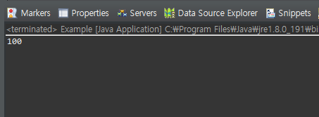
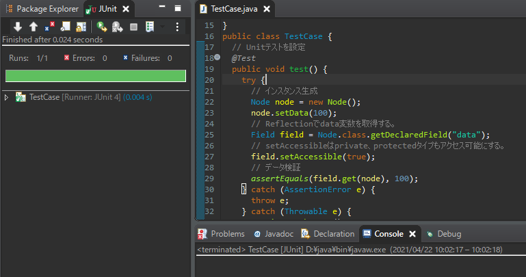

[Java] 31. Reflection機能を使う方法(Variable編)
こんにちは。明月です。
この投稿はJavaのReflection機能を使う方法(Variable編)に関する説明です。
以前の投稿でJavaのReflection機能をClassとMethodを分けて説明しました。
link - [Java] 29. Reflection機能を使う方法(Class編)
link - [Java] 30. Reflection機能を使う方法(Method編)
ClassとMethodにはStringでクラスやメソッドを探して割り当てすることや呼び出すことが重要なReflection機能でした。
このVariableでも別に違う機能があることではありません。
メンバー変数はOOPの特性でprivateのアクセス修飾子によりカプセル化します。
link - [Java] 14. オブジェクト指向プログラミング(OOP)の4つ特性(カプセル化、抽象化、継承、多相化)
普通はクラス内部でReflectionを利用して変数の値を取得することではないです。なので別に必要性がありません。
でも、クラスの外部でクラスの変数値を取得したい場合は？privateになっているから取得できないです。それがOOPの特性なので。
import java.lang.reflect.Field;
class Node {
// privateタイプ
private int data = 0;
// メンバー変数設定
public void setData(int data) {
this.data = data;
}
// メンバー変数リターン
public int getData() {
return this.data;
}
}
public class Example {
// 実行関数
public static void main(String... args) {
try {
// インスタンス生成
Node node = new Node();
// Reflectionでdata変数を取得する。
Field field = Node.class.getDeclaredField("data");
// setAccessibleはprivate、protectedタイプもアクセス可能にする。
field.setAccessible(true);
// dataフィールドに100を格納
field.set(node, 100);
// 結果は100が出力
System.out.println(node.getData());
} catch (Throwable e) {
e.printStackTrace();
}
}
}

上の例をみればNodeインスタンスを生成してgetDeclaredField関数でデータ値を取得します。
setAccessibleの関数はprivateの時にアクセスが可能にする関数です。
実はmainではNodeインスタンスのメンバー変数はprivateなのでアクセスができないです。
でも、上の例ではprivateになっているメンバー変数のデータを取得しました。そしてデータを格納することまでしました。
つまり、Reflectionを利用すればUnitテストのプログラムを作成する時、関数の結果だけではなく、途中のクラスのデバッグ値やメンバー変数の値を確認することができます。
import static org.junit.Assert.*;
import java.lang.reflect.Field;
import org.junit.Test;
class Node {
// privateタイプ
private int data = 0;
// メンバー変数の値を設定
public void setData(int data) {
this.data = data;
}
// メンバー変数の値をリターン
public int getData() {
return this.data;
}
}
public class TestCase {
// Unitテストを設定
@Test
public void test() {
try {
// インスタンス生成
Node node = new Node();
// dataフィールドに100を格納
node.setData(100);
// Reflectionでdata変数を取得する。
Field field = Node.class.getDeclaredField("data");
// setAccessibleはprivate、protectedタイプもアクセス可能にする。
field.setAccessible(true);
// データ検証
assertEquals(field.get(node), 100);
} catch (AssertionError e) {
throw e;
} catch (Throwable e) {
e.printStackTrace();
}
}
}

Reflectionのメソッドでもありますが、変数にもクラスの変数リストを取得する関数があります。
MethodではgetDeclaredMethods関数が呼ばされたクラスだけ、 getMethods関数は親クラスまでの関数がリストに出力されます。
変数は少し違いです。getDeclaredFieldsとgetFieldsの差異はgetDeclaredFieldsはprivateの含め変数、getFieldsはpublicだけの変数です。
普通のクラスはカプセル化になっているので、getFields関数は使うことではないですね。
リストだけではなく、変数名で取得する関数ても同じです。つまり、privateの変数をgetFieldに取得するとnullになります。こちらも変数がprivateタイプになっているのでgetDeclaredFieldだけ使うことになります。
ここまでJavaのReflection機能を使う方法(Variable編)に関する説明でした。
ご不明なところや間違いところがあればコメントしてください。
- [Java] 38. Javaでウェブサービスプロジェクト(JSP Servlet)を作成する方法2019/10/01 21:48:08
- [Java] 37.イクリプス(eclipse)でトムキャット(tomcat)を設定する方法2019/09/30 22:19:34
- [Java] 36.コーディングする時、よく使うコーディングパターンとステップ数を減らす方法2019/09/27 20:39:09
- [Java] 35. コーディング規約設定(Google Standard coding style)2019/09/26 21:31:25
- [Java] 34. WindowでMariaDBをインストールする方法2019/09/25 19:58:30
- [Java] 33. オープンライブラリを参照する方法(eclipseからmavenを連結)2019/09/24 19:35:54
- [Java] 32. Reflection機能を使う方法(Annotation編)2019/09/24 00:19:25
- [Java] 31. Reflection機能を使う方法(Variable編)2019/09/20 22:34:40
- [Java] 30. Reflection機能を使う方法(Method編)2019/09/19 20:20:10
- [Java] 29. Reflection機能を使う方法(Class編)2019/09/18 20:02:14
- [Java] 28. 文字タイプ(CharacterSet)とエンディアン(endian)で変換する方法2019/09/17 20:22:02
- [Java] 27. ネットワーク通信(Socket)をする方法2019/09/16 23:42:46
- [Java] 26. ファイル(IO)を扱う方法(ファイル作成、ファイル修正、アクセス日付変更とIOをclose(リソース返却)する理由、Closableインタフェース)2019/09/13 20:03:58
- [Java] 25. Objectクラス(notify、waitの使い方)2019/09/13 00:58:31
- [Java] 24. Javaの同期化(Synchronized)とデッドロック(Deadlock)2019/09/11 23:06:09
- [Design pattern] 1-1. シングルトンパターン(Singleton pattern)2021/06/09 19:40:05
- [Design Pattern] デザインパターンの紹介2021/06/08 20:42:36
- [Tools] Dbeaver(無料Sql queryブラウザツール)2021/04/28 18:26:49
- [Bootstrap] HTMLデザインのフレームワークのBootstrap紹介2020/07/30 19:06:36
- [Python] メール(smtplib)を送信する方法2020/07/27 18:38:43
- [Python] HttpConnection(requestsモジュール)でウェブサーバーで接続する方法2020/07/20 14:41:51
- [Python] Excel(openpyxl)を扱う方法2020/07/16 16:40:31
- [Python] ファイル圧縮、解凍(zipfile)する方法2020/07/14 19:14:22
- [Python] Apache cgiでPythonを使う方法2020/07/09 19:58:19
- [Python] Web serverを起動する方法(http.server)2020/07/09 00:13:13
- [Python] WebSocketを使う方法2020/07/07 17:29:18
- [Python] PythonとJavaのソケット通信する方法2020/07/03 18:35:50
- [Python] PythonとC#のソケット通信2020/07/01 19:28:22
- [Python] INI(環境設定ファイル)を扱う方法2020/06/30 18:26:01
- [Python] Jsonを扱う方法2020/06/29 19:18:15